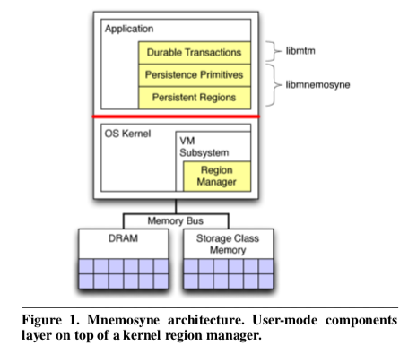
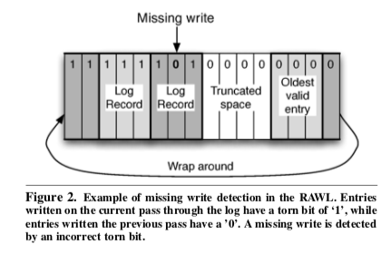

"Mnemosyne: Lightweight Persistent Memory"
Problem
How can we design programming interface for persistent memory (i.e., storage-class memory)?
Background
- Storage-class memory (SCM) provides interface of memory (load and store instructions) but the persistence of disks
System Design
-
Expose SCM as a persistent memory abstraction to provide direct access to the durability of SCM technologies
-
Goals
- User-mode access to persistence: simple for a programmer to declare data as persistent
- Consistent updates: support consistent modifications of data structures
- Conventional hardware: compatible with existing commodity processors
-
Design assumptions
-
Assumptions about SCM
- Support an atomic write of at least 64 bits
- Possible to stall execution until a write has made it all the way to SCM (similar to
fsyncin FS)
-
Failure models
- Data resident in SCM survives
- In-flight memory operations may fail
- Automic updates either complete or do not modify memory
-
-
Persistent regions
- Achieve 1st goal: User-mode access to persistence
- A segment of memory that is created and virtualized by the kernel but can be accessed directly from user mode
-
Virtualize regions by
- Recording the virtual-physical mapping of persistent regions in SCM
-
Swapping SCM pages to backing files that it allocates when creating a region
- Prevent memory leaks
-
Requires persistent pointer to receive memory
- Virtualizes persistent memory by swapping to files (leak does not reduce availability of persistent memory to other programs)
-
Consistent updates
- Primary mechanism to ensure consistency: ordering writes
-
Four methods
- Single variable update (atomically writing to a single variable)
- Append updates (log)
- Shadow updates (copy-on-write)
- In-place updates (in-place updates B-tree)
-
Persistent Primitives
- Achieve 2nd goal: Consistent updates
-
Low-level operations that enable programmers to implement four consistency methods
-
hardware primitives for persistent write and ordering write (Single variable update)
- Log facility (append-only updates)
- Persistent heap for allocating small blocks of memory (shadow updates)
-
Durable memory transactions
- Achieve 2nd goal: Consistent updates
- Support in-place updates
- Use compiler to convert C/C++ code into transactions to ensure atomicity, durability, and isolation (=> transactions allow concurrent update to different data structures)
-
Hardware Primitives
- Achieve 3rd goal: Conventional hardware
-
Use three hardware primitives from processors
- write-through stores: write data directly to memory rather than to the cache
- fences: prevent subsequent writes from completing before preceding writes
- flushes: writes a cahce line out to memory
-
Architecture

-
Implementation highlights
- Use tornbit in raw word log (RAWL) to use only one fence to solve "torn write" problem (compares with two fence & checksum approach, better performance)
